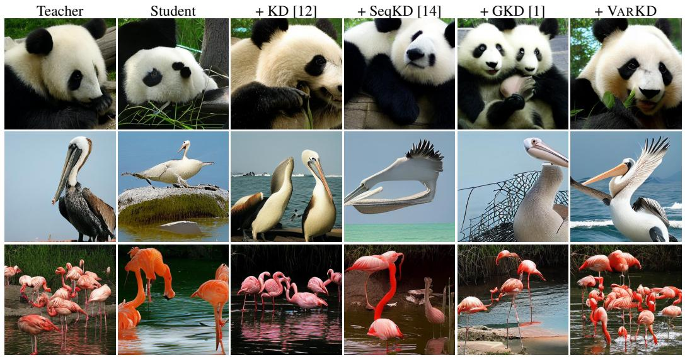

Figureure 1 · : Comparison of training paradigms for autoregressive (AR) image modelFigure 1: Comparison of training paradigms for autoregressive (AR) image models. We assume access to a dataset of real images (left), represented as sequences of discrete tokens. In standard maximum-likelihood training, the model is trained via teacher forcing, optimizing a cross-entropy loss against ground-truth tokens. In knowledge distillation (KD), a pre-trained teacher guides training by matching the student’s predictive distribution under ground-truth prefixes. In VARKD (right), we instead generate samples from the student conditioned on a partial ground-truth context and use the teacher to score these rollouts. We further introduce confidence-based reweighting to improve the reliability of the distillation signal.这张图/表用于判断 Knowledge Distillation for Visual Autoregressive 的实验收益来自哪里。重点看替换、消融或跨模型设置下趋势是否一致，而不是只看单个最高分。

Figureure 2 · : Qualitative comparison showing that VARKD reduces spatial artifacts Figure 2: Qualitative comparison showing that VARKD reduces spatial artifacts and improves global coherence over prior distillation baselines.这张图/表用于判断 Knowledge Distillation for Visual Autoregressive 的实验收益来自哪里。重点看替换、消融或跨模型设置下趋势是否一致，而不是只看单个最高分。